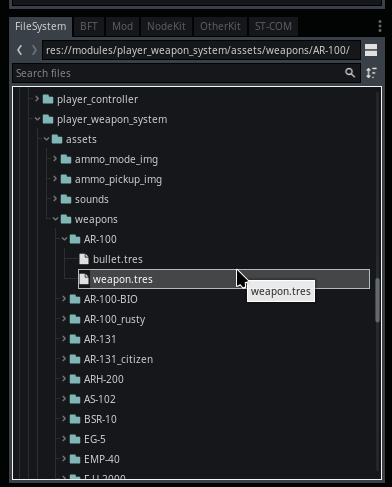

Module: player_weapon_system
Documentation last edited: October 23, 2025 at 14:33 UTC
Description
Итак, добро пожаловать на фабрику УБИЙСТВ муахаха. Этот модуль реализует оружие, которое может использоваться игроком. "That's gonna be a lot of damage."
Структура скриптов
.
├── weapon.gd
├── weapons
│ ├── firearm_bio_weapon.gd
│ ├── firearm_electro_weapon.gd
│ ├── firearm_flash_weapon.gd
│ ├── firearm_weapon.gd
│ ├── grenade_weapon.gd
│ ├── item.gd
│ ├── item_medical.gd
│ ├── melee_pickaxe_weapon.gd
│ └── melee_weapon.gd
└── weapon_system.gd
Главный скрипт системы оружия
"./weapon_system.gd"
Это сердце этого модуля. Он берёт все данные из
"res://modules/player_weapon_system/assets/weapons/"
и превращает их в фабрику убийств, о да. Эта система содержит основное, дополнительное, ближнее оружие, гранаты и usable предметы. Она делает следующее:
- Является инвентарём для оружия, конечно.
- Динамически загружает данные из файлов, расширяющих
PlayerWeapon
.
- Переключает оружие с анимированными переходами.
- Сохраняет инвентарь постоянным между чекпойнтами.
- Обрабатывает
PlayerWeapon
, принимает вводы, вызывает нужные функции.
- Обрабатывает некоторую специфичную для гранат логику с
PlayerGrenadeWeapon
для поддержки быстрых бросков гранат.
- Реализует систему подбора патронов.
- Делает некоторую интеграцию с HUD.
- Реализует систему подбора/выбрасывания оружия с
LocationProp
.
Другими словами, это своего рода сложный скотч для всего оружия, чтобы им было легче управлять и расширять. Это то, что тебе нужно знать :)
Базовый класс оружия
"./weapon.gd"
Как и говорится, это базовый класс для всего оружия в игре. Он предоставляет набор базовойфункциональности, необходимой для создания оружия. Пожалуйста, имей в виду, что оружие в этой игре расширяет
Resource
, поэтому система не
"scene-based"
, а
"resource-based"
. Все виды оружия - это ресурсы, которые должны расширять
PlayerWeapon
и храниться в уникальной папке в
"res://modules/player_weapon_system/assets/weapons/"
.
Шаблон
# Твой код шаблона оружия игрока
extends PlayerWeapon
class_name PlayerYourWeaponNameHere
# Переопределяемый метод для специфичной инициализации оружия
func custom_load_initialize() ->
void:
pass
# Вызывается, когда оружие скрывается
func on_hide() ->
void:
pass
# Вызывается, когда оружие экипируется
func on_take() ->
void:
pass
# Вызывается, когда анимация выстрела достигает точки воздействия
func on_shoot() ->
void:
pass
# Переопределяемый метод инициализации
func custom_initialize() ->
void:
pass
# Базовый метод стрельбы для переопределения
func fire(origin: Vector3, forward: Vector3, is_first = false) ->
void:
pass
# Инициирует последовательность перезарядки
func reload() ->
void:
pass
# Вызывается при подборе патронов
func on_ammo_pickup(multiplier = 1.0) ->
void:
pass
# Вызывается при активации подствольного гранатомёта
func on_grenade_launcher():
pass
# Вызывается при переключении режима патронов
func on_ammo_mode_switch():
pass
# Вызывается при удалении оружия
func on_remove() ->
void:
pass
# Переопределяемый метод обновления
func custom_update(delta: float) ->
void:
pass
# Переопределяемый метод физического процесса
func custom_update_process(delta: float) ->
void:
pass
# Переопределяемый обработчик смены локации
func on_location_change_custom():
pass
Оружие
"./weapons/"
Для этой игры уже созданы некоторые классы оружия, они хранятся в этой папке.
PlayerFirearmWeapon
- базовая реализация огнестрельного оружия, которая включает все типы штук, такие как отдача, разброс, контроль урона и т.д. Если ты хочешь сделать пушку, вероятнее всего этот ресурс - твой путь.
PlayerFirearmElectroWeapon
- расширение огнестрельного оружия, которое создаёт электро-взрыв при попадании во что-либо.
PlayerFirearmFlashWeapon
- расширение огнестрельного оружия, которое создаёт флешбэнг при попадании во что-либо.
PlayerFirearmBioWeapon
- расширение огнестрельного оружия, которое создаёт мясной взрыв при попадании в персонажа.
PlayerAnimatedItem
- базовый класс для анимированных предметов, которые ты можешь использовать, а затем переключиться обратно на обычное оружие.
PlayerAnimatedItemMedical
- медицинский предмет, который расширяет анимированные предметы для показа использования медицинских средств.
PlayerMeleeWeapon
- базовая реализация ближнего оружия.
PlayerMeleePickaxeWeapon
- в Zone-3A я хотел сделать какую-то Minecraft хрень, но сейчас это не используется.
Как сделать новое оружие

0. Создай новую папку в
"res://modules/player_weapon_system/assets/weapons/"
- Имя папки - это имя класса оружия, помни это.
1. Создай файл
"weapon.tres"
, выбери нужный тип ресурса оружия.
2. Настрой, та-да, вот твоё оружие.
Если ты хочешь сделать уникальную визуализацию, тебе нужно сделать новую вьюмодель, ты можешь прочитать об этом на странице модуля
"viewmodel"
General Information
Root directories list
assets, docs, src
Nodes
None
Classes
Resources
PlayerWeapon
PlayerFirearmElectroWeapon
PlayerAnimatedItemMedical
PlayerFirearmFlashWeapon
PlayerMeleePickaxeWeapon
PlayerFirearmBioWeapon
PlayerGrenadeWeapon
PlayerFirearmWeapon
PlayerAnimatedItem
PlayerMeleeWeapon
Other Scripts
None